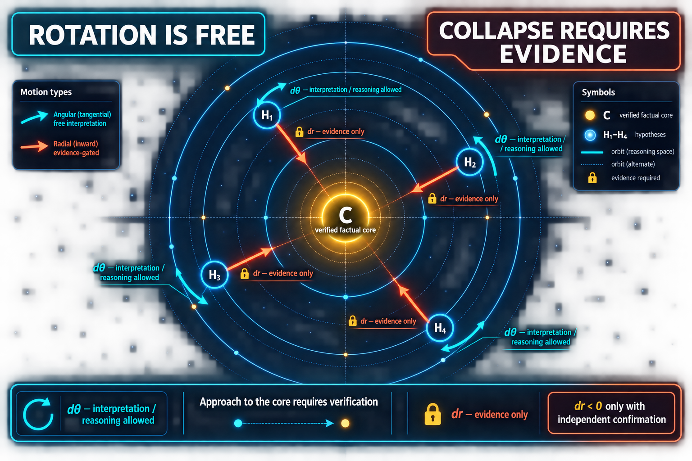

Center
C is witnessed
VerifiedCore contains a factual center C together with an explicit confirmation witness. The formal model never manufactures that witness.
PM-01 · Lean 4 · verified interpretation boundary
Interpretation can rotate a hypothesis through its reasoning space. It cannot move that hypothesis toward the verified factual core—or promote it to fact status—without independent confirmation.

959e547115393e38e50ff5933e357588d94efd3821990b751dce7e60f873be39Center
VerifiedCore contains a factual center C together with an explicit confirmation witness. The formal model never manufactures that witness.
Orbits
HypothesisOrbitFamily assigns each Hᵢ a nonnegative radius rᵢ and an angle. Identity, radius, angle, and epistemic status remain separate fields.
Free direction
Any angular displacement is constructible. Pure interpretation preserves both the orbit radius and fact status.
Locked direction
The same independent witness is required when a state moves from hypothesis to verifiedFact.
Kernel theorem bundle
dRadius_rotateBy_zero and dTheta_rotateBy compute the two displacements.radial_approach_requires_independent_verification exposes the evidence witness for every admitted inward move.no_verification_blocks_fact_promotion blocks promotion when that witness is absent.interpretation_changes_angle_not_fact_status is the visual invariant shown above.External proof layer
A first-order TPTP mirror of the gate consequences is independently proved by Vampire 5.0.1 and E 3.2.5. Full TSTP/CNF traces ship beside the Lean source.
Boundary: this is not a mechanical Lean-to-TPTP equivalence proof and does not mirror real arithmetic.
Amari seam
The current radius is an abstract epistemic coordinate. A genuine Amari layer must instantiate hypotheses as probability distributions, derive a Fisher information metric, choose a divergence or geodesic distance, and prove that a stated verification update reduces it.
Red boundary
Lean proves consequences of the declared structures and predicates. It does not prove that real beliefs, experiences, social connections, or psychological states lie on literal circles; that an asserted verifier is independent; or that the radius is a Fisher–Rao distance.
Русское чтение: интерпретация может свободно менять угол, но не статус факта. Радиальное сближение с подтверждённым ядром допускается только при отдельном независимом свидетельстве. Это эпистемическая модель с верификационным шлюзом, а не уже построенная информационная геометрия Амари.
Thematic source: Oleksiy Salkutsan, “The first cut is simple…”—flow → interface → trace → interpretation space → verification → action → new flow. LinkedIn post. The post motivates the reading; it is not a formal premise.